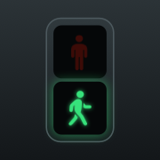

Tabellone
Supporto per l'app iPhone
A cosa serve
Comanda il tabellone del foyer del cinema: per ogni sala ENTRARE o ATTENDERE. Quando una sala apre, il tabellone la annuncia a schermo intero, con un suono.
Cosa serve
- Il programma del tabellone acceso sul computer del foyer (lo installa chi gestisce il tabellone del cinema).
- L'iPhone sulla stessa rete Wi‑Fi del computer del tabellone.
Collegarsi
- Apri l'app e tocca Inquadra il codice QR.
- Inquadra il codice QR che compare sul computer del tabellone: indirizzo e PIN sono già dentro.
- Quando iOS lo chiede, consenti fotocamera e rete locale.
Senza codice QR: ⚙︎ → scrivi l'indirizzo «Dal telefono» e il PIN che compaiono sul computer del tabellone.
Responsabile e colleghi
La prima app che si collega a un tabellone diventa quella del responsabile: aggiunge, rinomina e sposta le sale, sceglie gli schermi e il suono. Le altre app aprono e chiudono le sale e basta.
Se il responsabile cambia telefono: sul computer del tabellone apri il pannello (Ctrl+M su Windows), premi Scollega l'app del responsabile, poi nella nuova app tocca ⚙︎ → Riprova.
Se qualcosa non va
- Non si collega: il telefono è sulla stessa Wi‑Fi del computer del tabellone? Il programma del tabellone è acceso? Le reti «ospiti» spesso isolano i dispositivi: usa la rete del personale.
- Non vedo Modifica e +: questa non è l'app del responsabile (vedi sopra).
- Non suona: nell'app del responsabile, Modifica → Suono quando una sala apre. Controlla anche il volume del computer del tabellone.
Contatti
Scrivi a auriemmaemanuele@icloud.com.